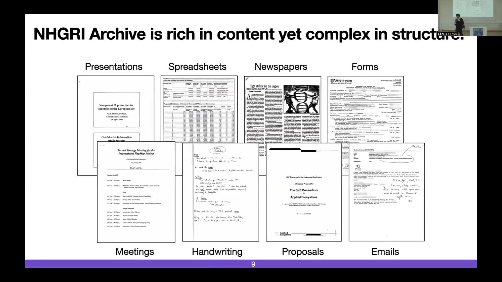

18 Beyond Traditional Views of Science Funding
Overview
Researchers meticulously investigate the processes and impacts of science funding, moving beyond conventional bibliometric analyses of publications and grants. This inquiry focuses upon the National Human Genome Research Institute (NHGRI), renowned for its pioneering contributions to biology, particularly through the Human Genome Project. An interdisciplinary team, encompassing historians, physicists, ethicists, computer scientists, and former NHGRI leadership, analyses an extensive internal archive. This repository contains over two million pages of documents from the NHGRI, including meeting notes, handwritten correspondence, presentations, spreadsheets, and emails. Growing by 5% annually through continuous digitisation, this archive offers unparalleled insight into the internal workings of a major funding agency.
Methodologically, the project employs advanced computational techniques to process and analyse these born-physical and born-digital artefacts. These techniques include developing a custom-built handwriting removal model using a U-Net architecture. This process enhances the accuracy of Optical Character Recognition (OCR) for printed text whilst enabling a distinct processing pipeline solely for handwriting recognition. Multimodal models, harnessing visual, textual, and structural modalities, facilitate sophisticated tasks such as entity extraction and synthetic data generation to train classifiers. Robust systems for entity and Personally Identifiable Information (PII) recognition meticulously mask and disambiguate sensitive data, including names, organisations, email addresses, locations, and identification numbers, achieving high F1 scores with relatively small fine-tuned datasets.
A pivotal aspect of the research involved reconstructing and analysing the NHGRI’s internal and external email correspondence network. By extracting entities from thousands of scanned paper emails and linking them, researchers successfully recreated an intricate web of communication from the Human Genome Project era. This reconstructed network encompasses 62,511 distinct email conversations originating from 5,414 individual scanned emails. Network analysis, including stochastic block modelling and brokerage role analysis, uncovered leadership structures, such as an informal ‘Kitchen Cabinet’ within the International HapMap Project. It also revealed patterns of information flow, suggesting NHGRI leadership frequently adopted a consultative, rather than gatekeeping, posture.
Furthermore, the research explored funding decisions by computationally modelling the factors influencing organism selection for genome sequencing post-Human Genome Project. This model integrated biological features (e.g., genome size, distance to model organisms), project characteristics (e.g., team size, submission history, gender equity, internal proposal origin), applicant reputational metrics (e.g., H-index, community size, network centrality), and linguistic characteristics of proposals (e.g., argumentation, repetitiveness). The findings suggest that all these feature categories collectively predicted funding success, with reputational factors like H-index and community size demonstrating a Matthew Effect.
The project’s broader objective centres on rendering such born-physical archives Findable, Accessible, Interoperable, and Reusable (FAIR). This involves applying these methodologies to other extensive archives, including federal court records and seismological data. Crucially, this endeavour underscores the imperative of preserving these rich historical data sources and developing sophisticated tools to extract knowledge, inform policy, enhance data accessibility, and address pressing scientific questions. The consortium actively seeks testers, partners, and users for its ‘Born Physical, Studied Digitally’ initiative, which receives support from the NIH, NVIDIA, and the NSF.
18.1 Limitations of Current Science Funding Analysis

State-sponsored research has profoundly shaped the scientific landscape since the Second World War. It operates under a social contract where public funds support research endeavours, expecting them to yield societal benefits such as informed policy, clinical advancements, and new technologies. Scholars in the science of science predominantly study this enterprise by examining publicly accessible data, primarily scientific publications and grant awards. Indeed, analyses of these sources, including bibliometrics, have offered valuable insights into diverse aspects of science, including its long-term impact, the evolution of team sizes, the emergence of interdisciplinary fields, and the career trajectories of scientists.
Nevertheless, relying solely on the scientific article presents an incomplete, even skewed, representation of the complex scientific process. To assume that bibliometrics fully encapsulates the essence of science constitutes an oversimplification. A deeper understanding necessitates investigating the processes that precede publication, moving beyond the flawed picture painted by articles alone. Such an approach could illuminate critical questions: Does scientific inquiry shape funding priorities, or do funding agendas dictate the direction of science? Within the innovation pipeline, from initial ideation to eventual long-term impact, where do innovations flourish, diffuse across domains, or ultimately falter?
Notably, the focus on published articles means that failed projects, which could offer significant learning opportunities, often remain unexamined. Beyond direct financial support, funders may also contribute through public data provision, community engagement initiatives, technology development, and cooperative agreements. All these factors influence both the creation of knowledge and the scholars involved. A dynamic interplay also exists between grant funding and technological development.
18.2 The Human Genome Project: A Paradigm of ‘Big Science’

The Human Genome Project (HGP) stands as a landmark example of ‘big science’ in biology, analogous to large-scale projects in fields like particle physics. This colossal undertaking brought together tens of countries and thousands of researchers with the shared goal of sequencing the entire human genome. Its significance extends across multiple dimensions. Firstly, the HGP captured public interest to an extent previously unseen for a biological research programme, shifting focus from laboratory-based studies of organisms like Drosophila and C. elegans to a grand human-centric endeavour. Secondly, its impact resonates profoundly today; a vast majority of modern biological research, particularly omics methodologies, would be unfeasible without the reference genome it produced. Indeed, the HGP effectively established genomics as a distinct scientific discipline.
Furthermore, the project pioneered new data-sharing practices, now widely adopted, and forged a powerful synergy between computational science and biology. Two principal organisations spearheaded this international effort: the Wellcome Trust in the United Kingdom and, crucially for this study, the National Human Genome Research Institute (NHGRI), which served as the HGP division within the US National Institutes of Health (NIH). Dr Francis Collins, then Director of the NHGRI and later Director of the NIH, played a pivotal leadership role.
18.3 NHGRI: An Innovative Funding Agency
Analysis reveals the National Human Genome Research Institute (NHGRI) as a particularly innovative funding body within the National Institutes of Health (NIH). Several bibliometric indicators support this assessment when comparing NHGRI to other NIH institutes. For instance, NHGRI-funded research accounts for a larger share of manuscripts in the top 5% most cited publications. Moreover, its output demonstrates substantial long-term citation impact (measured after ten years) and generates significant citations from patents, indicating translation into clinical applications. The research funded by NHGRI also exhibits high ‘disruption’ scores, suggesting it often pioneers new directions.
Whilst these metrics establish NHGRI’s innovative capacity, the underlying reasons for this success remain less understood. Consequently, an interdisciplinary research team has assembled to investigate the processes and practices that enable NHGRI to lead innovation. This team comprises experts from diverse fields, including history, physics, ethics, and computer science, and notably includes Dr Francis Collins, a former Director of both NHGRI and NIH. Their collective aim is to unravel the factors contributing to the rise of genomics, identify potential failure points and innovation spillovers, and understand the collaborative mechanisms between funding agencies and academic scientists that foster scientific advancement.
18.4 The NHGRI Archive: A Rich and Complex Source

Owing to the recognised historical importance of the Human Genome Project, the NHGRI meticulously preserved a substantial collection of its internal documentation, spanning from the 1980s and 1990s into subsequent years. This internal archive constitutes a rich repository, containing diverse materials such as the daily meeting notes of scientists coordinating the genome project, handwritten annotations from correspondence, conference agendas, formal presentations, detailed spreadsheets, and newspaper clippings chronicling the period. Additionally, it includes various internal forms, research proposals, and extensive email communications.
The sheer volume of this collection, currently exceeding two million pages and expanding by approximately 5% each year due to continuous digitisation, presents a formidable challenge. Effectively analysing such a vast and complex born-physical and born-digital artefact at scale necessitates innovative approaches, forming the core of the research team’s methodological development.
18.5 Internal Archives Versus Public Data

The internal documents housed within the NHGRI archive possess characteristics and content fundamentally distinct from publicly accessible information, such as Requests for Applications (RFAs) and peer-reviewed publications. Whilst scholars can readily access RFAs and publications through databases like PubMed or NIH RePORTER, the internal records offer a different perspective. Visualisations, such as t-SNE plots, demonstrate that these internal materials form distinct clusters, separate from the clusters representing public RFAs and publications.
These internal records provide detailed accounts of numerous large-scale genomic projects initiated and funded by NHGRI. Examples include the Ethical, Legal, and Social Implications (ELSI) Program’s LSAC, modENCODE, eMERGE, ENCODE, the foundational Human Genome Project itself, PAGE, the International HapMap Project, H3Africa, and the NHGRI-EBI GWAS Catalog. Many of these initiatives represented substantial investments, often amounting to tens or hundreds of millions of dollars, and mobilised thousands of researchers globally. Their collective purpose was to develop crucial resources for the genomics community, thereby catalysing the advancement of the entire field.
18.6 Computational Methodologies for Archive Processing

Researchers developed specialised computational methods to manage the born-physical archive, a significant portion of which contains handwritten material. The use of AI for handwriting analysis presents not only technical hurdles but also ethical considerations regarding the unknown nature of handwritten content. To address this, the team trained a custom-built handwriting model, employing a U-Net architecture, specifically to identify and remove handwritten portions from documents. This process offers a dual benefit: it enhances the accuracy of Optical Character Recognition (OCR) on the remaining printed text and simultaneously enables the creation of a distinct processing pipeline dedicated solely to handwriting recognition.
Beyond handwriting, the project leverages advances in multimodal models, drawing from the document intelligence research community. These models ingeniously combine visual information (the document image), textual content, and layout structure. Such an integrated approach supports diverse tasks, including sophisticated entity extraction. Furthermore, it facilitates the generation of synthetic documents, which serve as valuable training data for developing and refining new classification algorithms, thereby improving the system’s analytical capabilities over time.
18.7 Entity and PII Recognition

A critical aspect of processing the NHGRI archive involves the meticulous handling of sensitive information. The documents contain genuine Personally Identifiable Information (PII), including details of real individuals, credit card numbers, and social security numbers, pertaining to people some of whom remain active in governmental and academic roles today. Consequently, the researchers implemented robust methods for entity and PII recognition. Their system effectively identifies, masks, and disambiguates such sensitive data throughout the vast collection.
The performance of these recognition models proves strong, as evidenced by F1 scores that improve with increased fine-tuning data for various entity types. These include persons (PERSON), organisations (ORG), email addresses (EMAIL), locations (LOC), and identification numbers (IDNUM). This careful approach ensures privacy and ethical compliance whilst enabling scholarly analysis of the archive’s content.
18.8 Reconstructing the NHGRI Correspondence Network

Researchers conducted a detailed case study involving the reconstruction of email networks from the NHGRI archive. By extracting entities from thousands of scanned paper copies of emails and linking them, they successfully recreated the intricate web of correspondence that occurred during the Human Genome Project era. This reconstructed network encompasses 62,511 distinct email conversations originating from 5,414 individual scanned emails. Each node in the visualised network typically represents an individual involved in these communications, with affiliations to NIH (National Institutes of Health) or external entities (such as other funding agencies, companies, or universities) clearly delineated.
Applying network analysis techniques, such as stochastic block modelling for community detection, yielded significant insights, particularly concerning the coordination of large-scale initiatives like the International HapMap Project. The HapMap Project, a major genomics endeavour following the HGP, focused on human genetic variation and laid the groundwork for genome-wide association studies (GWAS). Managing such a complex project, involving numerous universities and agencies, relied on formal structures like a steering committee. However, the computational analysis, performed in an unsupervised manner, revealed a hitherto undocumented informal leadership circle, dubbed the ‘Kitchen Cabinet’. This group, referencing a term from the Nixonian political era, apparently convened prior to official steering committee meetings, likely to address potential issues proactively and ensure smoother formal proceedings.
18.9 Information Brokerage and Leadership Dynamics

Further investigation into the NHGRI’s operational dynamics focused on comparing the communication patterns of the informal ‘Kitchen Cabinet’ with those of the formal Steering Committee. Utilising brokerage role analysis, which assesses how individuals or groups mediate information flow within a network, researchers identified distinct behavioural patterns. This analysis categorises nodes based on their interaction styles, such as ‘consultant’ (receiving information and disseminating it back within their own group) or ‘gatekeeper’ (receiving information but not sharing it back with the originating group).
The findings indicate that the ‘Kitchen Cabinet’ primarily functioned in a consultant capacity, a pattern that distinguished it from other formal leadership structures active at the time. Notably, individuals like Francis Collins appeared to play significant consultant roles within this informal group. This suggests a leadership style at NHGRI that favoured consultation and open information exchange rather than restrictive gatekeeping, potentially contributing to the agency’s collaborative successes.
18.10 Modelling Funding Decisions for Genome Sequencing
The research extended to analysing the funding agency’s decision-making processes through portfolio analysis, specifically modelling the choices made when selecting non-human organisms for genome sequencing following the completion of the Human Genome Project. Funding agencies like NHGRI faced complex decisions in allocating resources amongst numerous proposals from different organismal research communities, each advocating for their chosen species (e.g., various primates). To understand these decisions, scientists developed a machine learning model designed to recapitulate the actual funding outcomes.
This computational model incorporated a diverse array of features. Biological characteristics, such as the proposed organism’s genome size and its evolutionary distance to already sequenced model organisms, demonstrated predictive value (Area Under Curve, AUC: 0.76 ± 0.05). Project-specific attributes—including the size of the proposing team, the time elapsed since their initial submission, measures of gender equity within the team, and whether the proposal was standalone or internally generated—also proved influential (AUC: 0.83 ± 0.04). Furthermore, reputational factors, such as the H-indices of the authors submitting the proposal, the overall size of the relevant research community, the proposers’ centrality within the NHGRI network, and the breadth of community support, showed strong predictive power (AUC: 0.87 ± 0.04). Linguistic elements of the proposals themselves, like the strength of argumentation and the degree of repetitiveness, also contributed to the model’s accuracy (AUC: 0.85 ± 0.04).
Crucially, when all these feature sets were combined, the model achieved a high level of performance in predicting funding decisions (AUC: 0.94 ± 0.03). This indicates that a multifaceted approach, considering biological, project-related, reputational, and linguistic factors, is necessary to understand the complexities of such funding allocations.
18.11 Interpreting Funding Decisions: The Matthew Effect

To delve deeper into the factors driving funding decisions, researchers employed feature interpretability techniques. These methods help to elucidate how individual features within the computational model influence the predicted outcome, thereby identifying characteristics associated with a higher or lower probability of receiving funding. One significant observation from this analysis is the presence of a ‘Matthew Effect’, a phenomenon where initial advantages tend to accumulate further advantages.
Specifically, the analysis revealed that proposals submitted by authors with a higher maximum H-index were more likely to secure funding. Similarly, organisms supported by a larger, more established research community also had a greater chance of being selected for sequencing. This pattern aligns with the strategic objectives of funding agencies, which often prioritise projects perceived as having a higher potential for significant downstream impact and eventual clinical applications.
18.12 Broader Applications: From Archives to Knowledge
The methodologies and insights gained from the NHGRI archive project extend to a broader vision of leveraging born-physical archives through computational analysis. This specific study serves as a compelling example of how such historical data, when processed with advanced tools, can yield valuable knowledge. The research consortium collaborates with various partners and utilises diverse data sources beyond the NHGRI, including federal court records from the United States and seismological data (seismograms) from the EarthScope Consortium.
A generalised workflow underpins these efforts. It begins with the acquisition of data and metadata from these archives. Subsequently, a sophisticated knowledge creation pipeline applies a series of computational processes. These include:
page stream segmentation to delineate document structures
handwriting extraction
entity disambiguation to resolve identities
layout modelling to understand document formats
document categorisation
further entity recognition
redaction of personal information for privacy
modelling of decisions or processes captured in the records
The ultimate aim of this comprehensive approach is to transform raw archival data into actionable insights that can address pressing scientific questions, inform policy-making, and significantly enhance the accessibility of these rich historical resources. This transformation relies on robust algorithms and a well-developed cyberinfrastructure.
18.13 Preservation, Collaboration, and NHGRI’s Significance
A significant challenge remains in the preservation of born-physical data, much of which currently resides in vulnerable conditions, such as shipping containers susceptible to damage and neglect. The imperative to safeguard these invaluable historical records for future scholarly and scientific inquiry cannot be overstated. Recognising this, the ‘Born Physical, Studied Digitally’ consortium actively seeks collaboration, inviting testers, partners, and users to engage with their tools and methodologies. This initiative receives support from prominent organisations including the National Institutes of Health (specifically NHGRI), NVIDIA, and the National Science Foundation (NSF).
The speaker also highlighted a pertinent contemporary issue: recent proposals within the United States to dissolve the NHGRI. This underscores the critical need to appreciate the agency’s historical contributions. Evidence suggests NHGRI stands as one of the most innovative funding agencies in the annals of science. Consequently, the rich data contained within its archives promise to unlock answers to numerous significant scientific questions, reinforcing the importance of its continued study and preservation.